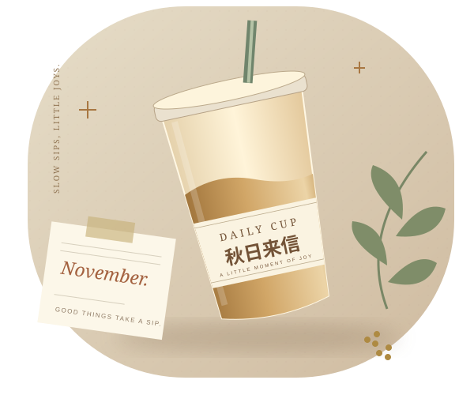
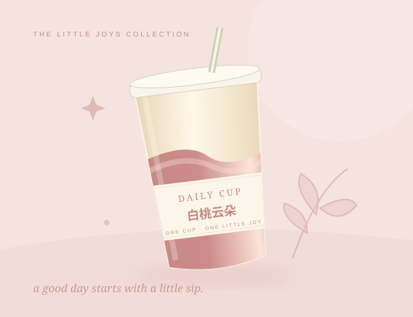

A LITTLE JOY IN EVERY CUP
发现新味道，也记下今天的好心情。

THE NEXT GOOD SIP
上新日期、品牌与产品为课堂演示数据，不作为实际购买信息。
MAKE IT A MEMORY
写几句话，放一张照片。把今天的小确幸，收进自己的电子手账。

A NEW PAGE
留住味道，也留住今天的心情。
手动填写，照片与文字仅保存在当前浏览器。本实验未接入AI识别。
PLEASE CONFIRM
请启用JavaScript以使用日历筛选和本地手账，页面导航仍可直接使用。